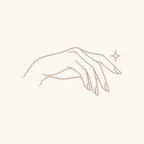
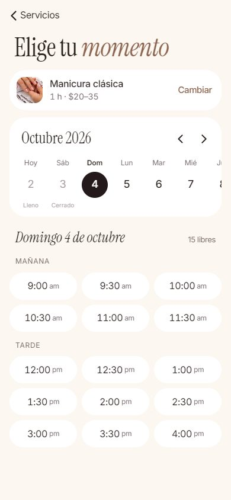
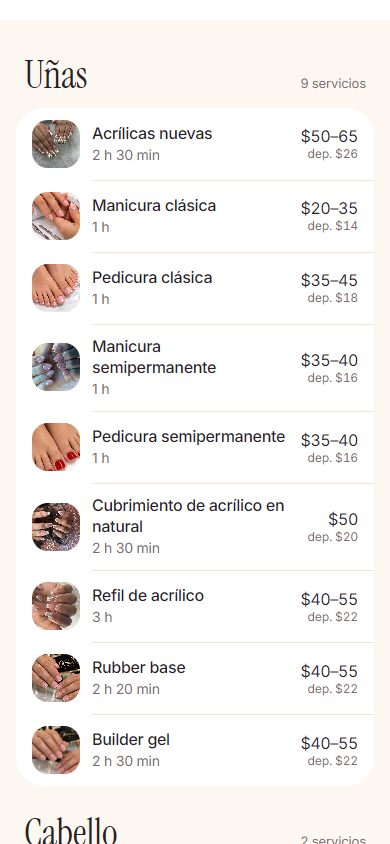
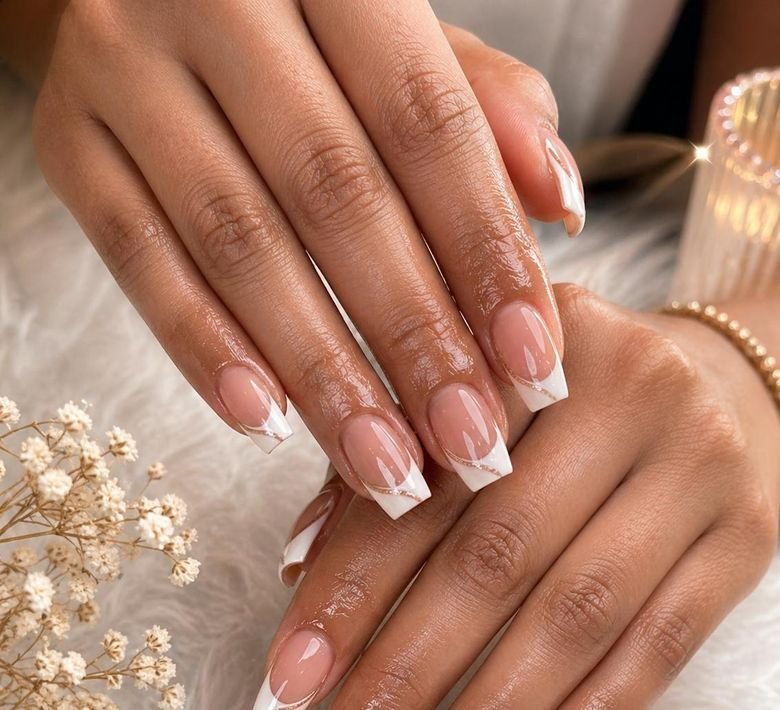
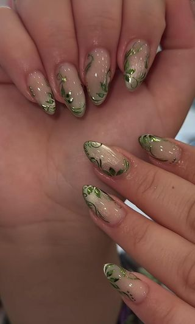
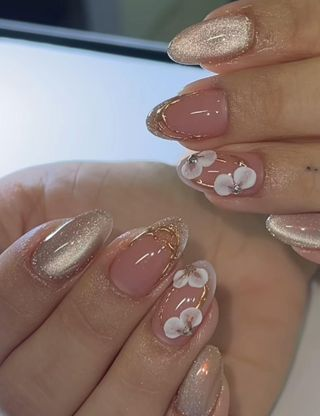
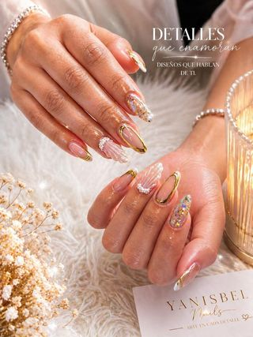

reservas online para un salón de uñas
toca un teléfono para verlo de cerca ↓



Arte en cada detalle · Sarasota, FL
Abierto ahora · Dom–Vie 9 am–5 pm · Sáb cerrado



elige día y hora, sin llamadas
cada servicio con foto, precio y depósito